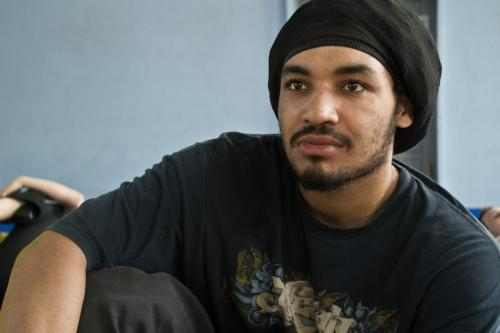

О семинаре с монитором Coringa (CDO) и Da Nigeria (FICA) в Минске
Небольшой гонзоотчет об этом семинаре.
Мопед отчет не мой, а тренера Axé Харьков Андрея.
И снова в Минске спустя энное количество лет.
Как давно это было и как много с тех пор воды утекло, много чего изменилось, кадры подросли.
Минская семья Axé пригласила к себе в гости на семинар по капоэйре. Мероприятие обещало быть интересным — 3 дня по 2 тренировки в день под руководством Сэта из группы КДО-Питер и Криса из группы ФИКА-Москва.
Семинары это всегда хорошо, особенно это хорошо, когда у тебя есть время потренироваться в свое удовольствие, но в моем случае были внесены определенные корректировки.
Я стоял на вокзале и ждал Влада, который мило согласился провести со мной 17 часов в пути из Харькова в Минск. Поезд, вагон, купе и в путь. Часть дороги Влад рассказывал мне про Сэта. Никогда его не видел, и мне было очень интересно с ним познакомиться.
Как и все поезда на постсоветском пространстве наш поезд опоздал минут на 20-30, (прим. как сказали проводники, поезд стоял потому, что мы сбили поездом человека) плюс я снабдил встречающих дезинформацией по поводу номера вагона. Но нас нашли. Сходя с поезда, Влад провел тест Сэта на Сэта, попросив его показать свою руку забитую тату. Это оказался Сэт и Влад был очень доволен. Далее было поселение, затаривание провиантом на время после тренировок и так далее. Андрей (он же Seigiard) обрадовал меня, сказав, что я веду тренировку сегодня, потому что по каким-то техническим причинам Крис из ФИКА-Москва не смог приехать в этот день. В голове у меня начала закладываться мысль, что все мои идеи потренироваться накрываются медным тазом…
Зал, знакомые лица, незнакомые лица, мелкие детали организационных вопросов и тренировка началась. Начинающие достались мне, а продолжающие достались Сэту. Скажу честно, в самом начале поглядывал на то, что давал Сэт, потому что сам никогда не был ни на одно семинаре КДО, но потом тренировочный процесс настолько поглотил меня, что я и не успел опомниться, как закончилась моя тренировка. Слова благодарности тренеру и смена группами. Вторая тренировка и очередная перезагрузка. По лицам ангольерушей из Минска было видно, что они ждали Криса и тренировку в стиле ангола.
Первый день тренировок подошел к концу — домой, душ, еда, а после еды небольшая прогулка по ночному Минску в ближайший паб. Приятно порадовало то, что ночью на улицах Минска играет классическая музыка. Уверен что нигде такого ночью не услышишь. Еще наш приезд в Минск принес тепло, которое после окончания второго дня тренировок превратилось в жаркую роду, но об этом дальше.
Второй день начался с того что утром в комнату где обитали я и Влад вошел Крис, я помахал ему рукой, но он меня не узнал. Может все дело было, в накинутом на меня балахоне, потому что поду утро я очень замер и был вынужден одеться, чтобы согреться. Снятие балахона повлияло на узнавание, и Крис в ответ помахал рукой. Душ, завтрак из огромных порций омлета и вперед на тренировку. Ура, ура, ура, ура — сегодня я тренируюсь.

Тренировка у старшей группы началась с анголы, начинающих продолжил просветлять Сэт. Ангола, ангола, ангола, ангола, как же давно это было. В последний раз на тренировке по анголе я был много лет тому назад и ещё тогда для себя усвоил что это, прежде всего особенное состояние. Из колонки заиграли заунывные ритмы, тренировка началась. Непривычная для всех джинга, непривычные удары и уходы, а главное непривычное состояние. Было много интересного и непривычного. В прошлый раз когда я был на тренировке по анголе у меня очень устали руки, в это раз у меня очень устали ноги. Минские анголейруши чувствовали себя как рыба в воде, хотя было не без курьезов. После окончания тренировки Крис попросил, чтобы все высказали свое мнение по поводу тренировки. Все сидели в кругу и Крис подходил к каждому и спрашивал. Со стороны это выглядело так, будто здоровый представитель афро-американской культуры подходит и что-то требует от бедных и несчастных бледнолицых. Как мне показалось все остались довольны. Жалко было только Влада, он только после перелома ноги и выступал в роли оператора и наблюдателя. Хотя я знаю, что ему бы очень хотелось потренироваться, покрутиться и повертеться — разминок и растяжек на мате ему было явно недостаточно. Хлопки, аплодисменты, тренировка подошла к концу, перерыв, обед, разговоры о том и о сем, одним словом продолжаем знакомиться.
По окончанию обеда нас ждала вторая на этот день тренировка, тренера поменялись группами и понеслась. Никогда не был на тренировках группы КДО и всегда хотел попасть на них. Я бы назвал это «матрица перезагрузка». Вся информация в форме движений, что нам давал Сэт, очень качественно легла на умело вспаханную почву после Криса. И снова непривычная джинга, много необычных элементов и так далее. Думаю, что всегда очень сложно описывать тот материал, который дают на тренировках. И любое, даже самое умелое, описание не передаст всей полноты.
По окончанию тренировок нас всех ждала рода. Рода была открытой, поэтому на нее могли прийти все желающие, включая просто зрителей. Все началось с анголы и роды ди ангола было много, по сравнению с бенгелой и режионалем. Успел поиграть с Крисом, успел пару раз поймать пол своей попой, за что отдельное спасибо Крису за столь драгоценный опыт. Что очень понравилось, что несмотря на то, что рода ди ангола нам абсолютно не свойственна, все с легкостью выходили в круг и пытались вспоминать и применять те движения, которые отрабатывали на тренировке. Было много песен, которых я никогда не слышал. По окончанию роды ди ангола, было видно что все изрядно подустали, но впереди ещё рода и все выходили в круг, делились своей энергией. Все было супер, всем огромное спасибо. Рода закончилась самбой и словами благодарности. По окончании, почти все, ну или по крайней мере большинство из тех, кто был на семинаре, пошли к нам на квартиру, которая в один миг превратилась в шумное общежитие. В процессе общения все мы ближе познакомились, успели обсудить разные моменты из семинара, да и жизни вообще. Капоэйра очень социальная штука и она очень сильно всех нас сближает.
Третий день. Утром пришел Андрей всех нас будить, потому что в 12 мы должны были выселиться из квартиры. В этот день тренировки начались с музыкального занятия, играли несколько вариаций ритма ангола, пели новые песни, музыкальное занятие было очень в тему, все успели подзарядиться и набраться сил на вторую тренировку. После обеда тренировку у старших вел Сэт, а у начинающих Крис. Я попробовал прейти в резистенцию, но ноги сказали мне «нет» и я присоединился к Владу в ряды наблюдателей. Тренировки были очень интересными и Сэт, несмотря на простуду и температуру отработал на все 100%. После окончания тренировки наступило время провожания гостей, всех участников семинара мы с Андреем оставили на Криса. Уходя я видел, как он показывал им шамаду и разъяснял ее особенности. Когда мы вернулись, тренировка уже подошла к концу и все выходили из зала. Мы простились с Крисом и ребята отправились с ним перекусить, а потом отправлять его на поезд.
Резюмирую посещение Минска и семинара: очень радушный, семейный прием, очень интересные и качественные тренировки и много нового, над чем как обычно, стоит поработать и взять на вооружение, в соответствии со стилистикой своей группы, Сэт и Крис – замечательные тренера, очень много отдачи и доверия, отдельное спасибо Минской семье Аxé за то, что пригласили в гости.
Salve Capoeira!!!!
Андрей (тренер харьковской группы Ахé Capoeira)